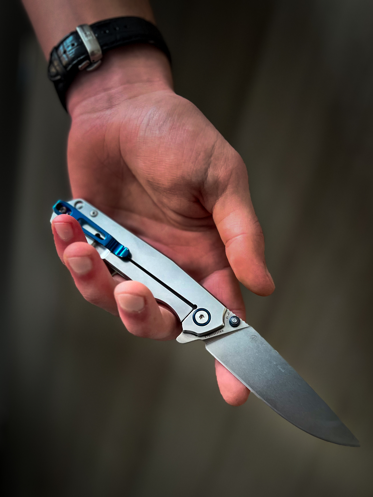
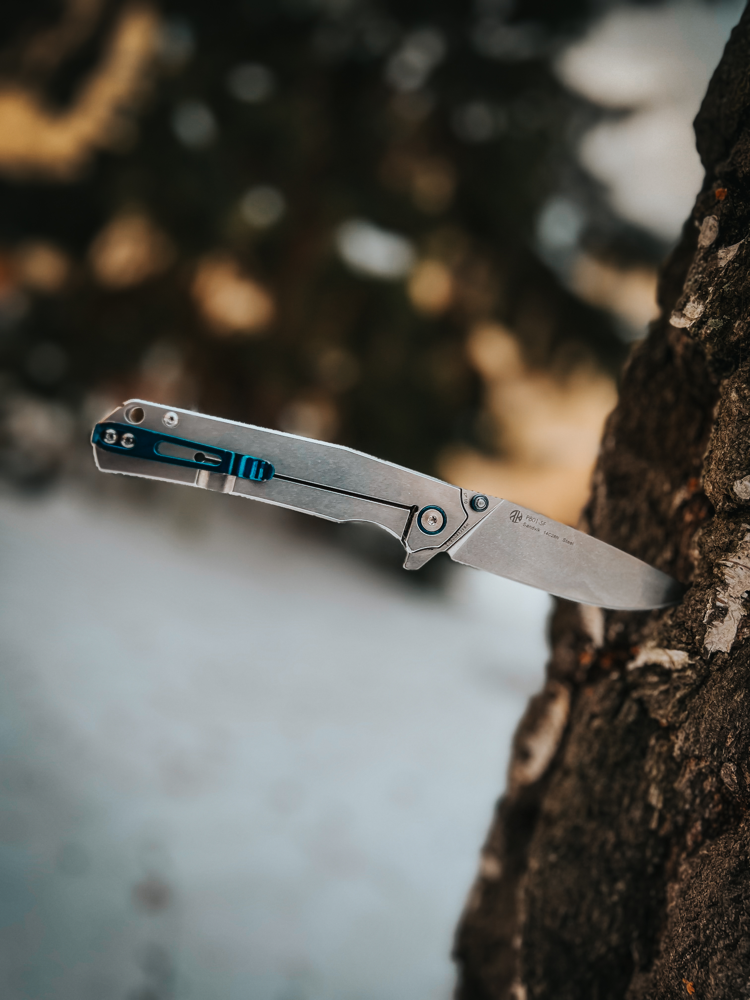

Co je RazorBlade Viper?
Viper je náš nový model nože pro Everyday Carry. Čepel je vyrobena z prvotřídní oceli 1428N a příložky jsou z kalené oceli 1.4116.
Čepel se otevírá na čepu taktéž z kalené oceli a keramických ložiscích. Klip je z anodizovaného titanu.
Můžete ho používat na sebeobranu, trénovat s ním, nosit ho do přírody nebo třeba i do kuchyně.
Everyday carry
Správný můž nosí nůž.. určitě to znáte sami, nůž je každodenní pomocník. Viper byl navržen s ohledem právě na každodenní nošení. Nůž skvěle padne do ruky a lze ho pohodlně a svižně otevřít jednou rukou.
Možná si říkáte, že u nutně nepotřebujete mít nůž neustále u sebe a možná máte pravdu, ale zároveň se jednou můžete dostat do situace, kdy vám bude nůž nezbytný a zrovna ho mít nebudete. Co je horší varianta necháme na vás?
Pořiďte si ho nyní
- 196mm
- 93mm
- Ocel 1428N
- 129g
- Ocel 1.4116
- Titan
Náš důvod proč vyrábíme nože?
V našich nožích se nejvíce odráží myšlenka, že nůž je především nástroj. Design je jednoduchý a praktický, bez zbytečných prvků, ale přesto velice funkční a splňuje vše co byste mohli od svého nože chtít.
Myslíme si, že každý správný můž by měl mít nůž. V dnešní době se může jednat o kontroverzní myšlenku, ale i přesto je to pravda.
Hlavní role muže v minulosti byla starat se o svoje blízké a chránit je. V dnešní době to platí stále i když se to děje jinak.